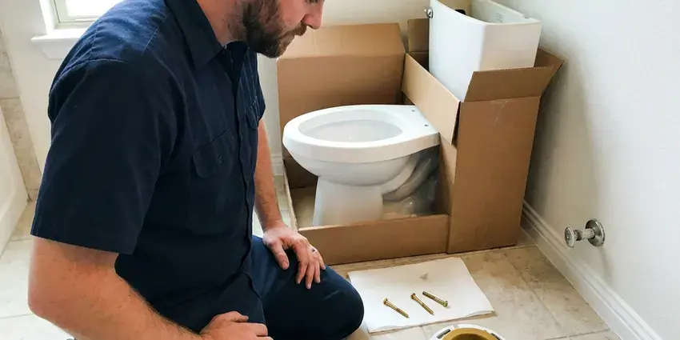
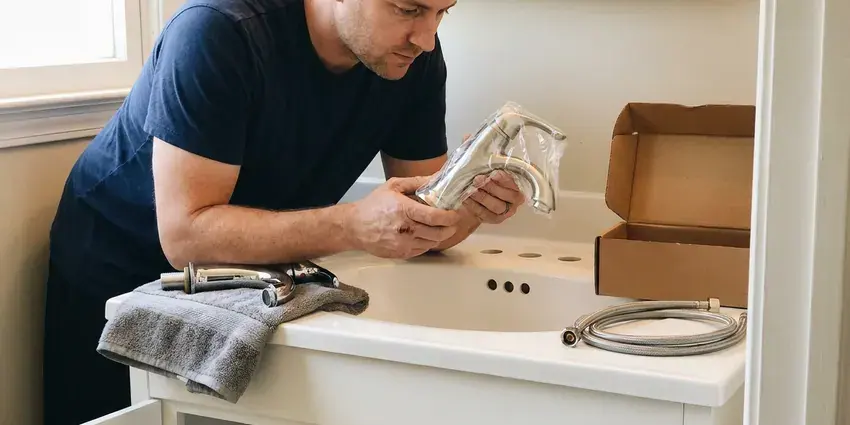
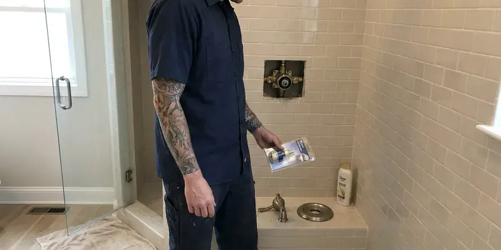
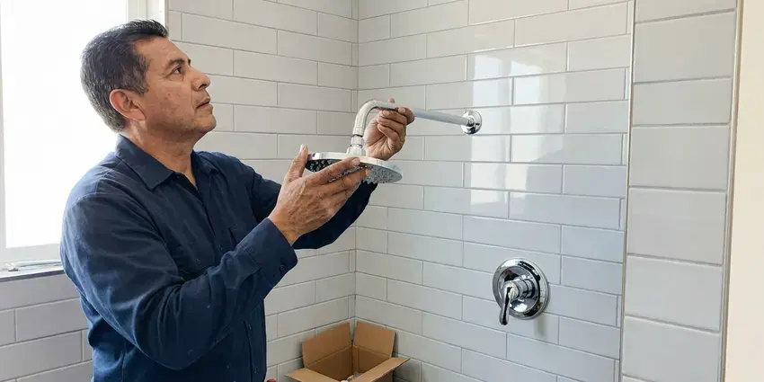
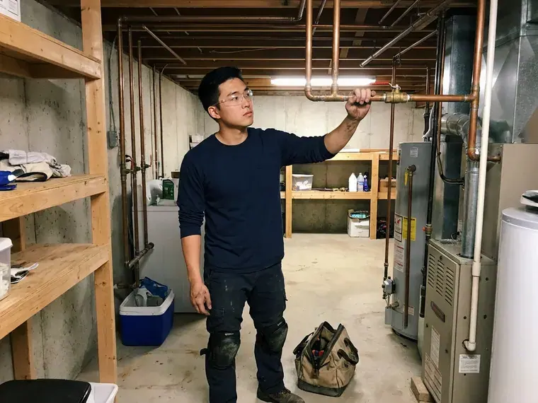

Faucet Repair in Ames, IA
Is a dripping faucet driving you crazy in Ames, IA? Our skilled plumbers are ready to tackle any repair, big or small.
- Upfront Pricing
- Drip-Free Guarantee
- Upfront Flat-Rate Pricing
- Skilled Plumbers

Stop Leaks, Call for Faucet Repair in Ames, IA.
Our team is standing by to provide fast and efficient faucet repair services.
Faucet Repair for Kitchen, Bath and Tub Faucets in Ames, IA
KFR Plumbing services single-handle, two-handle, pull-down and touchless faucets in kitchens, bathrooms and laundry rooms. Hard water speeds up wear on rubber seals and ceramic cartridges, so we check every part before deciding on the fix. If a faucet is beyond saving, we tell you and price a replacement.
Our expertise includes:
- Cartridge and stem replacement for Moen, Delta and Kohler
- Repairing or replacing failing internal components.
- Aerator and sprayer descaling for low flow and sputtering

Additional Bathroom Plumbing Services in Ames, IA
From toilets to showers, our bathroom plumbing team in Ames, IA handles repairs, installs, and upgrades with tidy, code-compliant work.


Toilet Installation near Ames


Faucet Installation in Ames

Local shower repair by KFR Plumbing, Ames

Professional shower installation, Ames

Customers
Why Choose KFR Plumbing for Faucet Repair in Ames, IA?
We prioritize lasting solutions over quick fixes, making sure your repaired faucet stands up to daily use. You can count on our expertise for reliable results.
- Full Inspection, We check supply lines, shutoffs and the faucet base for silent leaks.
- Water Conservation, Stopping leaks saves hundreds of gallons of water per year, which adds up for any household.
- Clear Pricing, You get a flat price to approve before work starts.
Citywide Coverage
We repair faucets in every neighborhood of Ames, from older homes with original two-handle fixtures to new builds with pull-down kitchen faucets. Scheduling is quick, and most visits happen the same or next day.
Experienced Team
Each plumber at KFR Plumbing is a seasoned professional, skilled in accurately diagnosing faucet problems and putting lasting solutions in place. We pride ourselves on the expertise our team applies to every faucet repair, delivering quality workmanship you can trust.
Safety-First Approach
All repairs follow plumbing code, including anti-scald limits on tub and shower valves. We make sure hot and cold are on the correct sides so no one gets an unexpected burn.
Trusted Certified Ames Plumbing Services Professionals
At KFR Plumbing, we take pride in providing certified plumbing services throughout Ames, IA. Backed by recognized industry credentials, our experienced plumbers combine technical skill with genuine customer care. Whether it is repair, installation, or maintenance, we follow strict safety and quality standards to deliver long-lasting results you can trust.
Call Us Now PHCC Plumbing Contractor Recognition
PHCC Plumbing Contractor Recognition Better Business Bureau (BBB) Accreditation
Better Business Bureau (BBB) Accreditation Angi Certified Pro
Angi Certified Pro ISO 9001 Quality Management Certification
ISO 9001 Quality Management CertificationReliable Faucet Repair Services in Ames, IA
Tub Spout and Diverter Repair in Ames, IA
If water keeps running from the tub spout while the shower is on, the diverter is worn. We replace diverter spouts, stems and gates and repair tub faucet drips. Slip-on and threaded spouts each install differently, so we bring the right type for your setup. This repair brings back full shower pressure.

Delta & Moen Faucet Repair in Ames, IA
We have extensive experience repairing and servicing faucets from all leading brands, including popular names like Delta, Moen, Kohler, Pfister, and American Standard. Each brand has its own internal components and repair procedures. Our technicians are trained on the specifics of these manufacturers, ensuring that we use the correct replacement parts and methods for your particular faucet model, providing a precise and lasting repair.
Leaky Faucet Repair in Ames
A dripping faucet is more than just an annoyance, it's a waste of water and money. Fixing a leak quickly is one of the simplest ways to conserve water at home. Our plumbers can identify the cause, whether it's a worn-out washer, O-ring, or a corroded valve, and replace the failed components. We carry a wide range of common parts so most leaky faucet repairs can be completed in a single visit, restoring your peace and quiet.
Emergency Faucet Repair in Ames
Sometimes, a faucet issue can't wait. A badly leaking or broken faucet can quickly cause significant water damage, especially if it's spraying uncontrollably. We offer emergency faucet repair services in Ames to address urgent situations promptly. Our team is equipped to respond fast, limit damage, and provide immediate repairs to secure your property and prevent further water loss, even outside of regular business hours.
Faucet Repair Versus Replacement in Ames, IA
A cartridge repair often costs well under the price of a new faucet and can add years of life. However, if the faucet body is cracked, parts are discontinued or it has needed several repairs, replacement may be better value. We give you both prices so you can choose. Many brands like Moen and Delta offer lifetime warranties on cartridges, which can reduce your repair cost.
Cartridge Faucet Repair in Ames, IA
Many modern single-handle faucets, often found in newer homes, use a cartridge system. When these fail, you might experience inconsistent water temperature, reduced flow, or difficulty turning the faucet on or off. Our technicians are skilled at diagnosing cartridge issues and replacing them with the correct manufacturer-specific part, so your faucet works like new. We work with all major brands to provide precise repairs.
Specialty Faucet Repair in Ames, IA
Beyond standard kitchen and bathroom fixtures, we handle repairs for specialty faucets such as pot fillers, utility sink faucets, and outdoor spigots found on many homes. These often require specific tools and knowledge due to their unique designs and usage. Whether it's a garden hose bib that won't stop dripping or a filtered water faucet under your sink, KFR Plumbing has the expertise to diagnose and repair it properly.

Commercial Faucet Repair in Ames, IA
KFR Plumbing also provides robust commercial faucet repair services for businesses throughout Ames. High-traffic commercial faucets, from public restrooms to breakrooms, endure constant use and often require more durable parts and specialized repair techniques. We understand the urgency of commercial plumbing issues and offer prompt, efficient service to minimize disruption to your business operations and support compliance with health codes.
Faucet Repair Near Me in Ames, IA
Our commitment to the Ames community means providing reliable and accessible faucet repair for every resident. We're always just a phone call away, ready to send a qualified plumber to address your faucet issues quickly and effectively, wherever you are located.
When you search for 'faucet repair near me' in Ames, you want a local, dependable plumbing company that understands the local climate and water conditions. KFR Plumbing is your trusted local expert, ready to provide prompt and professional service right where you are. We are committed to serving our community with honesty and skill.
KFR Plumbing at a Glance
- Fully licensed plumbing team covering Ames, IA
- 24/7 emergency service with same-day scheduling
- Clear written estimates, no hidden fees
- 4.8-star rated by 620+ Iowa customers
Ames Map
Ames Information
- Population
- 65,686
- Area codes
- 515/641/712
- Service area
- Ames and communities within 40 miles
- Nearby
- Ankeny, Urbandale, Des Moines, Waukee
Private wells serve many rural homes, and nitrates, iron, and bacteria make routine well water testing an important habit. Timely faucet repair in Ames helps prevent mineral buildup and extend the life of your plumbing fixtures, protecting your home from potential water damage.
Expert Services
Trust our professionals for reliable KFR Plumbing solutions in Ames, IA.
Our Specialized Plumbing Services in Ames, IA
At KFR Plumbing, we provide a complete range of plumbing services across Ames, IA. From leak detection to full system installations, our team ensures fast, precise, and affordable service for both residential and commercial properties. Explore our core services below:


How Our Faucet Repair Process Works in Ames, IA
Faucet repair should be quick and stress-free. Here is our simple process.
Request a Quote
Contact us at (515) 308-3583 to describe your faucet issue and schedule a good service appointment. Our friendly staff will gather the necessary details to prepare for your visit.
Expert Diagnosis
A skilled plumber will arrive at your home to thoroughly inspect your faucet, identify the root cause of the problem, and explain the necessary repairs. We'll provide a clear, upfront estimate.
Precise Repair
Using quality parts and specialized tools, our technician will repair your faucet. We test the repair carefully to confirm proper function, water flow, and no leaks before we leave.
Frequently Asked Questions About Faucet Repair in Ames
Most faucet repairs cost $125 to $300, including the cartridge or seals and labor. Complex kitchen or touchless faucet repairs may run $200 to $400. We quote a firm price before any work starts.
Yes, KFR Plumbing stands behind our work. We offer a warranty on both the parts we install and our labor for faucet repairs. Specific warranty details will be provided at the time of service, giving you peace of mind that your repair is covered.
Faucet repair involves fixing the existing fixture by replacing specific worn or broken internal components like washers, O-rings, or cartridges. Faucet replacement means removing the old faucet entirely and installing a brand new one. We recommend replacement when a faucet is severely damaged, very old, or if you simply want an upgrade.
Our plumbers are skilled at repairing all major faucet brands commonly found in Iowa homes, including Delta, Moen, Kohler, American Standard, Pfister, and many others. We keep a stock of universal and common brand-specific parts to speed up repairs.
If the faucet body is solid and parts are available, a repair is generally worth it. If it is corroded, cracked or discontinued, a new faucet is often the better choice.
Yes. Private wells serve many rural homes, and nitrates, iron, and bacteria make regular well testing an important habit. Mineral buildup, primarily from calcium and magnesium, can clog aerators, corrode internal components, and lead to reduced water flow or leaks. Regular maintenance and prompt repairs are essential to combat these effects.
Yes. Hard water leaves calcium and magnesium deposits that clog aerators, wear cartridges and dull finishes. A water softener and regular aerator cleaning can lengthen faucet life.
Most standard faucet repairs, such as replacing a washer or cartridge, can be completed by an skilled plumber in about 30 minutes to an hour. More complex issues or specialty faucets might take longer, but we aim for efficient service to minimize disruption to your home in Ames.
What People Are Saying About Our Plumbing Experts?

Mark T.
When our office needed drain cleaning, KFR Plumbing provided quick, reliable service. The plumber arrived on time and made sure every drain flowed perfectly before leaving. Very satisfied.
Drain Cleaning · Des Moines, IA
Robert G.
The trenchless sewer replacement saved our front yard. They walked us through the camera inspection footage first so we knew exactly what we were paying for.
Sewer Line Replacement · Waukee, IA
Emily R.
I called KFR Plumbing for plumbing repair, and the technician was fast, polite, and thorough. They explained the problem clearly and fixed it the same day. I will definitely hire them again. Highly recommended!
Plumbing Repair · Urbandale, IAJames P.
Our commercial plumbing system had a leak under the sink, and KFR Plumbing handled it professionally. The plumbers arrived quickly and restored everything without disruption to our customers.
Commercial Plumbing · Urbandale, IA
Daniel K.
A pipe burst at 11 pm and they actually answered. The plumber showed up within the hour, shut everything down, and had us back to normal the next morning. Could not ask for more.
Emergency Plumbing · West Des Moines, IA
Laura S.
I scheduled a water heater replacement, and the team made the process smooth and affordable. The new unit works perfectly, and they cleaned up after completing the job.
Water Heater Replacement · Des Moines, IA